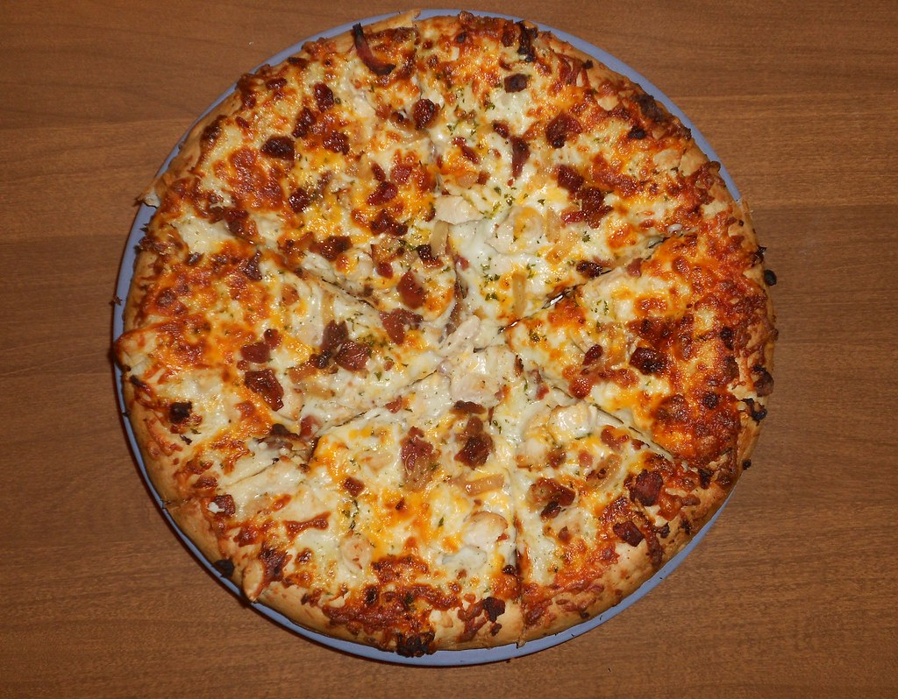

Home
Chicken Bacon Ranch Pizza

Description
This chicken bacon ranch pizza is the perfect recipe for family night. With its chewy and crispy crust and gooey, melty cheese, the flavor explodes in your mouth.
It is definitely one for the books!
Ingredients
For The Crust:
- 2-2 1/3 Cups pizza flour (bread flour or all-purpose flour work as well) "Divided"
- 1 Packet instant yeast (approx. 2 1/4 teaspoons)
- 1 1/2 Teaspoons sugar
- 3/4 Teaspoon salt
- 1 Teaspoon garlic powder and/or dried basil leaves (optional)
- 2 Tablespoons olive oil + additional for proofing
- 3/4 Cup warm water (120F-130F)
For The Sauce and Toppings
- 1/2lb chicken tenderloin (cubed)
- 12oz bacon
- 12oz Your choice of shredded cheese (I like to use Fiesta Blend)
- 1/2 Cup Ranch Dressing
Steps
- Combine 1 cup (125g) of flour, instant yeast, sugar, and salt in a large bowl.
Add in the garlic powder and/or basil at this point as well(optional).
- Add olive oil and warm water to the dry ingredients. Use a wooden spoon to stir very well.
- Gradually add 1 more cup of flour while continuing to stir. Add any additional flour until it forms
a cohesive, elastic ball and begins pulling away from the sides of the bowl. Note, the dough will be
sticky, but still manageable with your hands.
- Drizzle a separate, large, clean bowl generously with olive oil and use a pastry brush to brush up
the sides of the bowl.
- Lightly dust your hands with flour and form your pizza dough into a round ball and transfer to your
olive oil brushed bowl. Roll the dough along the inside of the bowl until it is coated in the oil,
then cover the bowl tightly with plastic wrap and place it in a warm place for proofing.
- Allow dough to rise for 30 minutes or until doubled in size. This is when you should preheat
your oven to 425F so it reaches temp once your pizza is ready to bake.
- Once the dough has risen, use your hands to gently deflate it and transfer to a lightly floured surface
and knead briefly until smooth.
- Use either your hands or a rolling pin to work the dough into a 12" circle.
- Transfer dough to a baking stone or parchment-lined pizza pan and either pinch the edges or fold
them over to form the crust.
- Drizzle additional olive oil (about a tablespoon) over the top of the pizza and use your pastry brush
to brush the entire surface of the pizza including the crust.
- Use a fork to poke holes all over the center of the dough to keep it from bubbling in the oven.
- Cook your chicken and bacon in your desired method and set aside.
- Add the ranch dressing, cubed chicken, bacon, and shredded cheese.
- Bake at 425F for 13-15 minutes or until the cheese and toppings are golden brown. Slice and serve!